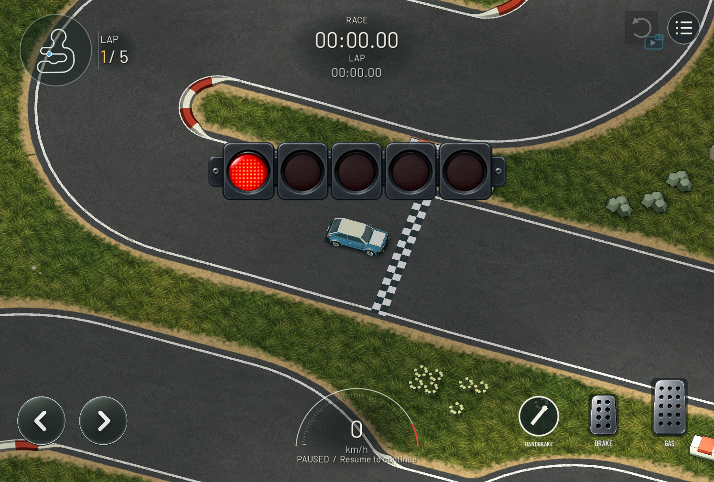
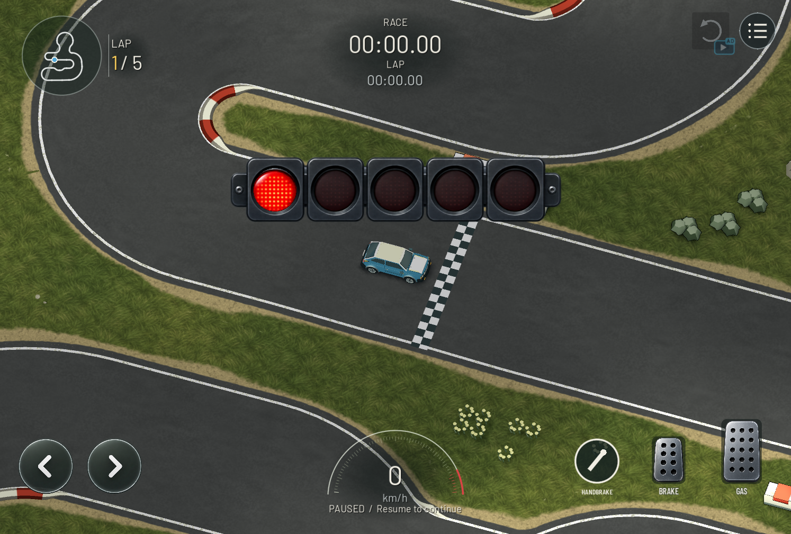

Environment coherence — 3 October 2026
Same Ajorata document, camera and car pose. The new environment is on the left; the baseline is on the right. These are paused desktop diagnostic captures, including their existing countdown and HUD overlays.


AfterBefore
Grass and road capture · Bridge and object contact shading · Implementation and actual validation